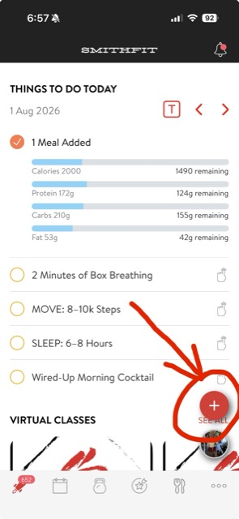
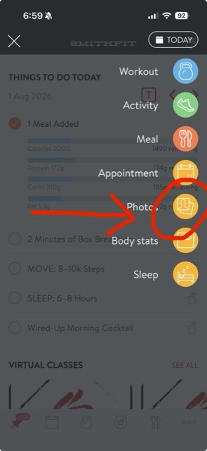
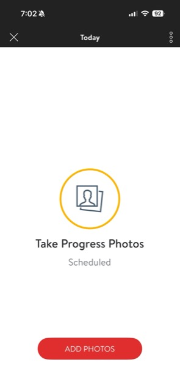
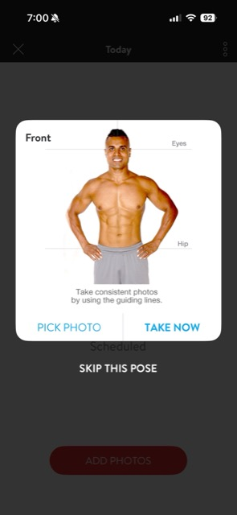
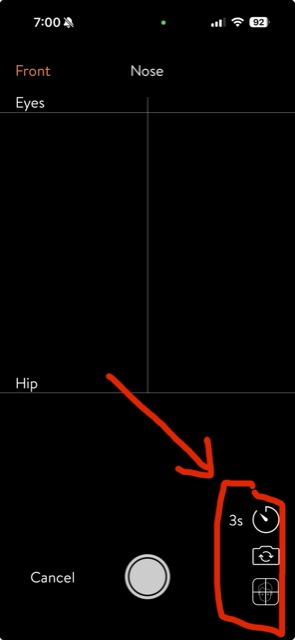

Three poses, once a week, logged with your weight. The evidence the scale cannot give you.
Set this up once and it takes thirty seconds a week forever.
Answer these once. It saves, so every Friday you already know the plan instead of deciding again.
Screenshot that line and it is the only decision you ever have to make about photos again.
Take it however you can take it. If a selfie in the mirror is what is realistic on a Friday morning, take the selfie. The timer just makes it easier, and the app has a 3 second one built in with a camera flip so you can use the back camera. Consistency of spot and light matters far more than method.
Only me. Not the community, not the group, not a feed. If a win is ever worth sharing, you approve exactly what goes out first.
Six taps. The app does most of the work for you.





While you are already in that plus menu, tap Body stats and put your weight in. Same morning, same conditions, same thirty seconds. Doing them together is what stops one of them from quietly becoming the thing you skip.
Same photo, wrong hour, and you have a picture of a hard day instead of your progress.
Never straight off a shift. After twelve hours you are inflamed, dehydrated, you have either not eaten or eaten at 3am, and you have not slept. Take them after a full night of real rest, whichever day that lands on. If that is Sunday instead of Friday, take them Sunday. Same condition beats same calendar.
Morning, after the bathroom, before you eat or drink. Same morning each week. Your body holds a different amount of water at 8am than at 8pm, and that gap alone is big enough to hide a month of real change.
Photos, weight, and your check-in all on the same morning, and then you are done thinking about it for a week. If the week was rough, say so when you send them. Honest beats impressive every time.
All of these are normal. None of them are a reason to have no picture one.
Take it and do not look. Send it and close the app. I will look at it, that is my job.
You are not taking this photo for today. You are taking it for the woman in eight weeks who wants proof, and she cannot go back and get it.
Lean the phone on the floor against the wall and step back, or take it as a selfie. A slightly odd angle every week is completely fine.
Nobody is judging the photography. We are comparing you to you, so the only thing that has to stay the same is the spot and the light.
Use the 3s timer and the camera flip, or tap SKIP THIS POSE and send front and side.
Two poses every week beats three poses once. Take the ones you can take and keep the streak.
Take it anyway, and tell me you were bloated.
The bloated weeks are data. When your check-in says water retention and cravings and the photo agrees, that tells me something real about your hormones. Those photos have changed more plans than the good ones.
Take one today. Do not try to reconstruct what you missed.
Whatever happened, happened. We do not look at it as a loss, we look at it as a lesson. Today is a perfectly good week one.
Correct, and expected. Compare across four weeks, never one.
Week to week is noise. Cortisol comes down in whooshes, not straight lines, so change shows up in a jump and then holds. Line up week one against week four and the conversation changes completely.
Everyone does, for about three weeks. Then it becomes the thing you look forward to on Fridays.
Every woman in the FAM took an awkward picture one. That is the entry fee, and it is the cheapest one in this whole program.
When you compare two photos, these are the four things that move first.
Shoulders back, chin level, weight even. This shifts before the scale does, almost every time, and it is your nervous system settling rather than anything you did on purpose.
Puffiness around the eyes and jaw is water and inflammation. It comes down early, and it is the change other people notice before you do.
Waistbands, sleeves, the way your scrubs fall. Regina went from a 14 to a 12 in two weeks with bloating and water retention coming down (results vary).
Not sucking in. Not hiding behind an arm. Look at whether the woman in the second picture is holding herself like someone who has decided something.
Almost everybody hates it. Almost everybody is glad later that they took it. You will want that first picture. It is the only one you can never go back and get.
Photos and weight on Friday morning, sent with your check-in. If the week was rough, tell me. A messy week is still data I can coach with.
Hit reply on my message in the appSmithFit · built by a nurse, for nurses